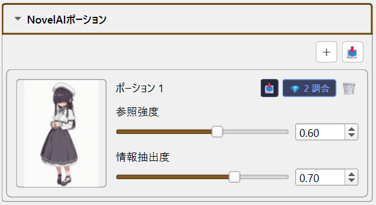
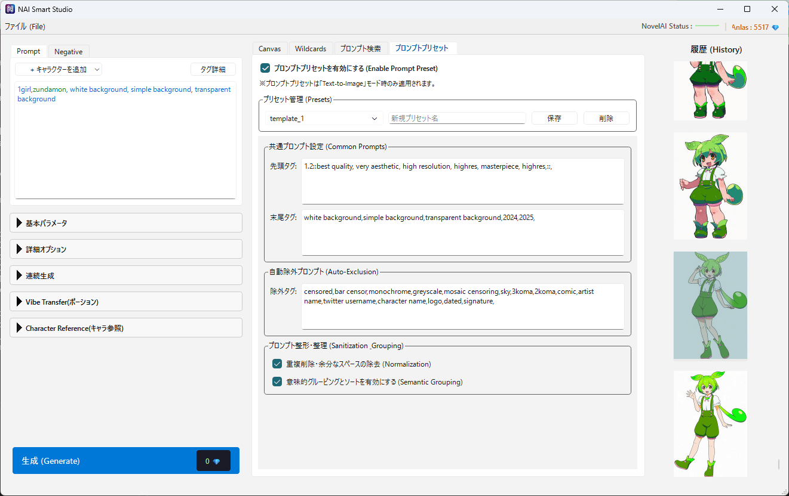
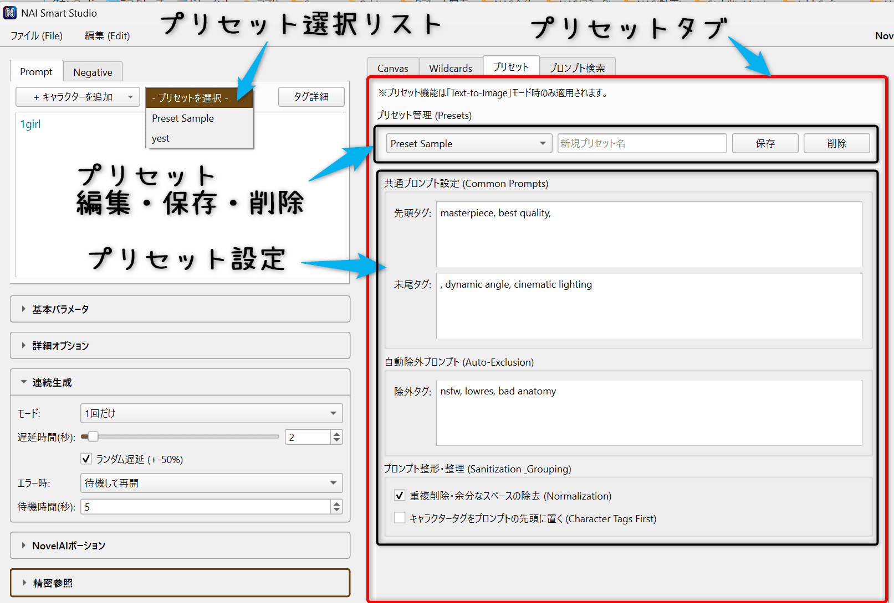
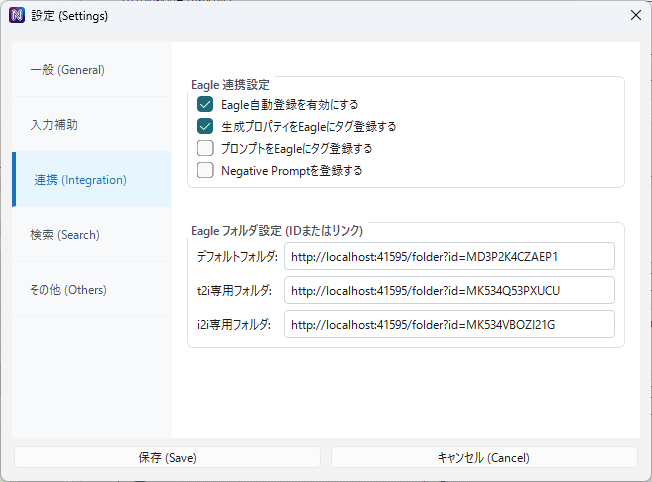

はじめに
NAI Smart Studioは、NovelAIでの画像生成をより快適に行うためのツールです。 ワイルドカード、プロンプト検索、連続生成など、公式UIにはない便利な機能を提供します。
本マニュアルでは、本ツール独自の機能を中心に解説します。
画面構成
画面は3つのエリアに分かれています。
- 左パネル: プロンプトやパラメータの設定
- 中央パネル: Canvas（キャンバス）と各種タブ
- 右パネル: 生成履歴
初回セットアップ
本ツールを使用するには、NovelAIのAPIキーが必要です。 初回起動時にAPIキーが設定されていない場合、設定を促すダイアログが表示されます。

APIキーの取得方法
- NovelAI公式サイトにログインします。
- 右上のアカウントメニューから「Settings」を開きます。
- 「Account」タブ内の「Get Persistent API Token」から、APIキーを取得・コピーします。
APIキーの登録
メニューバーの「設定」→「設定」から設定画面を開き、「一般」タブでAPIキーを登録します。

画像生成の基本
左パネルにプロンプトと各種パラメータを設定し、「生成」ボタンをクリックすると画像が生成されます。
プロンプト入力
- メインプロンプト: 生成したい画像の内容を記述します。
- ネガティブプロンプト: 生成から除外したい要素を記述します。
キャラクタープロンプト
複数のキャラクターを描く場合、「キャラを追加」ボタンから個別のプロンプト欄を追加できます。 これにより、各キャラクターの特徴を分けて指定できます。
解像度設定
「解像度テンプレート」から定番サイズを選択するか、幅・高さを個別に指定できます。 サイズはNovelAIの仕様に合わせて64ピクセル単位で調整されます。
生成コスト表示
生成ボタンの右側に、推定Anlasコストが表示されます。 解像度やステップ数によってコストが変動します。
Image-to-Image / Inpaint
既存の画像を元に新しい画像を生成したり、画像の一部だけを描き直す機能です。
画像の読み込み
以下のいずれかの方法でキャンバスに画像を読み込みます：
- キャンバスに画像ファイルをドラッグ＆ドロップ
- 右パネルの履歴から画像をクリック
- クリップボードから貼り付け（Ctrl+V）
画像を読み込むと、自動的にImage-to-Imageモードに切り替わります。

Inpaint（部分修正）
画像の一部だけを描き直したい場合は、マスクを描画します。 白く塗られた部分だけが再生成されます。
- ブラシ: フリーハンドでマスクを描画
- 長方形: 矩形範囲を選択
- 折れ線: 多角形範囲を選択

Strength（強度）
元画像からどれだけ変化させるかを調整します。 値が大きいほど元画像から離れた結果になります。
- 1.0: 完全に新しく生成（マスク部分）
- 0.5: 元画像と新規生成の中間
- 0.0に近い: ほぼ元画像のまま
Undo / Redo
生成結果を元に戻したい場合は「← Undo」ボタンで直前の画像に戻れます。 「→ Redo」で取り消した操作をやり直せます。
Vibe Transfer（ポーション）
参照画像のスタイルや雰囲気を新しい生成に反映させる機能です。 NovelAI V4.5モデルで使用できます。

使い方
- 左パネルの「Vibe Transfer(ポーション)」セクションを開きます。
- 「＋」ボタンをクリックして参照画像を追加します。
- 参照強度と情報抽出度を調整します。
パラメータ
- 参照強度 (Reference Strength): 参照画像の影響度合い。高いほど参照に近づきます。
- 情報抽出度 (Information Extracted): 参照から抽出する情報量。高いほど詳細を取り込みます。
ポーションセット
よく使う参照画像の組み合わせは「📦」ボタンからセットとして保存できます。 保存したセットは後から読み込んで再利用できます。
Wildcards（ランダム要素）
指定した単語リストからランダムに1つを選んでプロンプトに挿入する機能です。
髪の色、服装、背景などをランダム化して、バリエーション豊かな生成ができます。
使い方
-
ファイルの用意:
wildcardsフォルダ内にテキストファイル（例:color.txt）を作成し、1行に1つ単語を記述します。 -
プロンプトへの記述:
プロンプト入力欄に、ファイル名をアンダースコア2つで囲んで記述します（例:
__color__）。 -
生成: 生成実行時に
__color__の部分が、color.txt内のいずれかの行に置換されます。
プロンプト検索
タグデータベースから関連するタグを検索したり、過去のプロンプト履歴から参考になるフレーズを探す機能です。
セットアップ
初回使用時は、検索用データベースの構築が必要です。
「設定」→「検索
(Search)」セクションの「セットアップウィザードを起動」をクリックしてください。

自動的にデータをダウンロードし、インデックスを作成します。完了すると中央パネルに「プロンプト検索」タブが表示されます。
検索の実行
中央パネルの「プロンプト検索」タブを使用します。
-
含めるタグ:
検索したいキーワードを入力します。AND検索はスペース区切り、OR検索は
{A|B}の形式で指定します。 - 除外するタグ: 検索結果から除外したいキーワードを入力します。
- レーティング: 検索対象のレーティング（General, Sensitiveなど）をフィルタリングします。
検索結果はリスト表示され、クリックで詳細を確認できます。
「検索結果を生成キューに追加」ボタンで、検索結果のプロンプトを連続生成の予約リストに登録できます。
プロンプトプリセット
よく使う共通プロンプトや除外タグをテンプレートとして管理する機能です。 中央パネルの「プロンプトプリセット」タブからアクセスできます。
主な機能
-
先頭/末尾タグ (Prefix/Suffix):
すべての生成プロンプトの先頭または末尾に、指定したテキストを自動挿入します。
例: 画質タグ（masterpiece, best quality）を常に末尾につける、など。 - 自動除外 (Exclusion): プロンプトに特定の単語が含まれていた場合、生成時に自動的に削除します。
- プリセット保存: 上記の設定を名前付きで保存し、切り替えて使用できます。
連続生成
自動で大量の画像を生成するための機能です。枚数指定から、検索結果に基づいた生成まで対応しています。
基本的な連続生成
左パネル「連続生成」セクションから設定します。
- 枚数指定: 指定した枚数（例: 100枚）を生成して終了します。
- 時間指定: 指定した時間（例: 60分）が経過するまで生成し続けます。
- 中断するまで: 停止ボタンを押すまで無限に生成します。
検索キューからの生成
「プロンプト検索」で見つけたプロンプトを再利用して生成する機能です。
- プロンプト検索タブで検索を実行します。
- 「検索結果を生成キューに追加」をクリックします。
- メイン画面に戻り、「生成」ボタンをクリックします。
キューに登録されたプロンプトが順番に使用されます。
モデル、画像サイズ、Steps等のパラメータは現在のメイン画面の設定が適用されます。
設定・その他
キャラクター参照 (Character Reference)
特定のキャラクターの見た目を維持したい場合に使用する機能です（V4.5モデル専用）。 左パネルの「Character Reference」セクションから画像を登録します。

Eagle 連携
画像管理ソフト「Eagle」への自動保存設定です。生成と同時に、プロンプト情報もタグとしてEagleへ送信されます。
